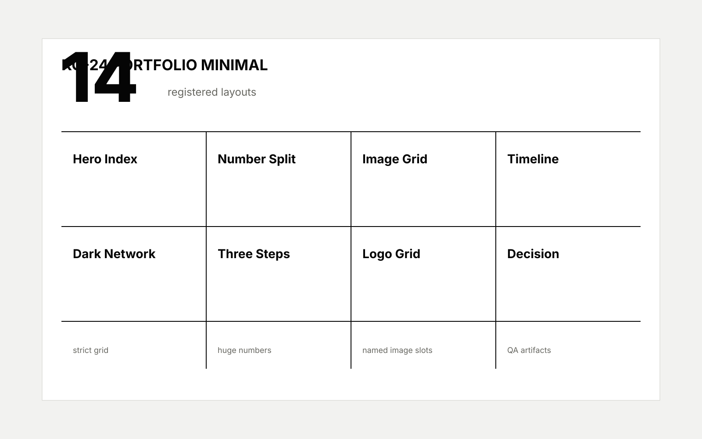

Knowledge Cat HTML
A style seed becomes real only after it has a pack
The target is reusable HTML production: layouts, metadata, examples, and checks.
01 / 12The benchmark gap is template depth, not taste
Registry
Fourteen layouts give the pack enough reuse surface
A pack needs enough page roles to build a complete deck without returning to generic title-plus-bullets.
registered custom-pm layouts
Proof wall
A proof wall makes the visual system inspectable

Image slot
Named ownership and ratio metadata make visual QA possible.
Theme rhythm
Light pages carry evidence; dark pages reset the story.
Source truth
Deck plan, pack registry, and QA report stay together.
Repair path
A failing check points to a concrete artifact.
Visual role
Each visual choice must carry a deck job
Evidence images preserve what the audience needs to inspect.
Portfolio images prove rhythm and craft instead of decorating uncertainty.
Generated images stay out of exact metrics, citations, and legal wording.
Style routing
The library now routes style by deck job
Sequence
The shortest path to ninety-nine is staged
Lock portfolio minimal first because it directly challenges Swiss HTML depth.
Add data story so Cat can win on evidence and decision structure.
Add editorial magazine for keynote and thought-leadership rhythm.
Add blueprint diagrams to own the technical explanation lane.
A dark reset reveals the system behind the slides
Mechanism
The pack turns taste into three repeatable moves
Choose one style seed by audience and lane.
Bind the seed to registered layouts and image slots.
Prove the output through validation and visual artifacts.
Boundary
Monochrome grids keep references honest
Before
The old Cat had guidance
References explained how a polished HTML deck should behave, but no signature pack carried the behavior.
After
The new Cat has a pack
A registry, template, case study, QA report, and dedicated check now make the path reusable.
99-point gate
The next move is to browser-capture this pack
The deterministic pack is in place; actual browser PNG capture is the final evidence upgrade.
12 / 12